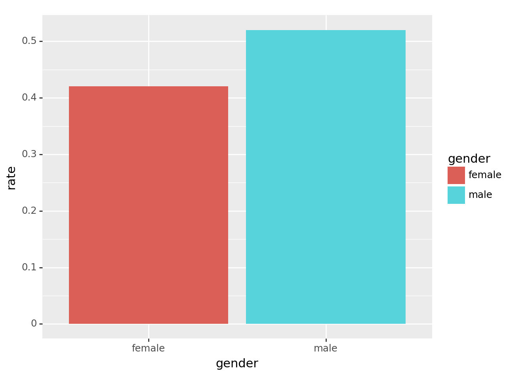
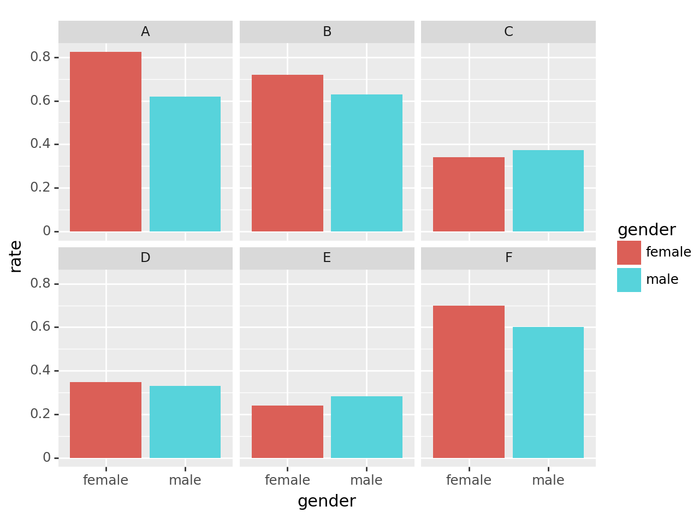
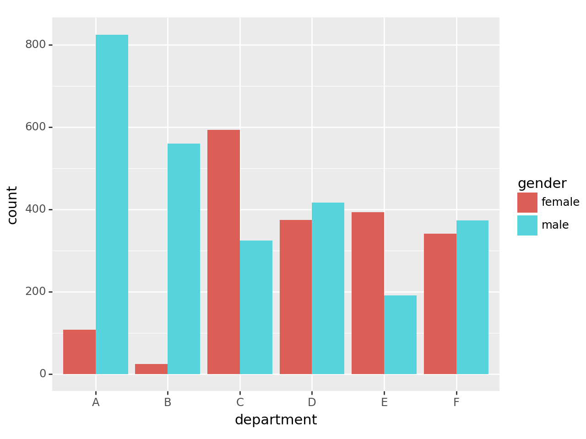
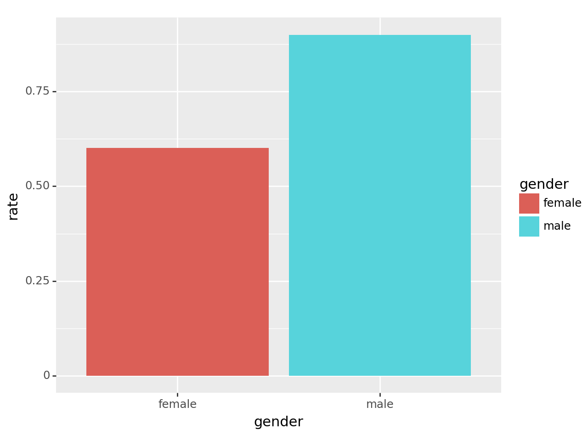
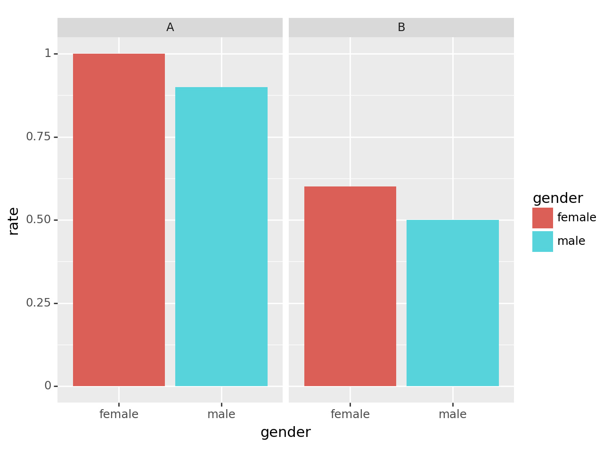

import pandas as pd
import numpy as np
from plotnine import *supp-2: 심슨의 역설 (2)
plotnine

1. 강의영상
2. Imports
3. 심슨의 역설 – 이어서
- 버클리대학교의 입학데이터
- 주장: 버클리대학에 gender bias가 존재한다.
- 1973년 가을학기의 입학통계에 따르면 지원하는 남성이 여성보다 훨씬 많이 합격했고, 그 차이가 너무 커서 우연의 일치라 보기 어렵다.
df=pd.read_csv("https://raw.githubusercontent.com/guebin/DV2022/master/posts/Simpson.csv",index_col=0,header=[0,1])\
.stack().stack().reset_index()\
.rename({'level_0':'department','level_1':'result','level_2':'gender',0:'count'},axis=1)
df| department | result | gender | count | |
|---|---|---|---|---|
| 0 | A | fail | male | 314 |
| 1 | A | fail | female | 19 |
| 2 | A | pass | male | 511 |
| 3 | A | pass | female | 89 |
| 4 | B | fail | male | 208 |
| 5 | B | fail | female | 7 |
| 6 | B | pass | male | 352 |
| 7 | B | pass | female | 18 |
| 8 | C | fail | male | 204 |
| 9 | C | fail | female | 391 |
| 10 | C | pass | male | 121 |
| 11 | C | pass | female | 202 |
| 12 | D | fail | male | 279 |
| 13 | D | fail | female | 244 |
| 14 | D | pass | male | 138 |
| 15 | D | pass | female | 131 |
| 16 | E | fail | male | 137 |
| 17 | E | fail | female | 299 |
| 18 | E | pass | male | 54 |
| 19 | E | pass | female | 94 |
| 20 | F | fail | male | 149 |
| 21 | F | fail | female | 103 |
| 22 | F | pass | male | 224 |
| 23 | F | pass | female | 238 |
A. 시각화1: 전체합격률 시각화 – pandas 초보
B. 시각화1: 전체합격률 시각화 – pandas 고수
tidydata = df.pivot_table(index='gender', columns='result', values='count', aggfunc=sum)\
.assign(rate = lambda _df: _df['pass'] / (_df['fail'] + _df['pass']))\
.reset_index()
fig = ggplot(tidydata)
col = geom_col(aes(x='gender',y='rate',fill='gender'))
fig + col /tmp/ipykernel_1831005/1840989269.py:1: FutureWarning: The provided callable <built-in function sum> is currently using DataFrameGroupBy.sum. In a future version of pandas, the provided callable will be used directly. To keep current behavior pass the string "sum" instead.
<Figure Size: (640 x 480)>C. 시각화2: 학과별합격률 시각화 – pandas 고수
df.pivot_table(index=['gender','department'], columns='result',values='count',aggfunc=sum)\
.assign(rate = lambda _df: _df['pass']/(_df['fail']+_df['pass']))\
.reset_index()/tmp/ipykernel_1831005/1491763288.py:1: FutureWarning: The provided callable <built-in function sum> is currently using DataFrameGroupBy.sum. In a future version of pandas, the provided callable will be used directly. To keep current behavior pass the string "sum" instead.| result | gender | department | fail | pass | rate |
|---|---|---|---|---|---|
| 0 | female | A | 19 | 89 | 0.824074 |
| 1 | female | B | 7 | 18 | 0.720000 |
| 2 | female | C | 391 | 202 | 0.340641 |
| 3 | female | D | 244 | 131 | 0.349333 |
| 4 | female | E | 299 | 94 | 0.239186 |
| 5 | female | F | 103 | 238 | 0.697947 |
| 6 | male | A | 314 | 511 | 0.619394 |
| 7 | male | B | 208 | 352 | 0.628571 |
| 8 | male | C | 204 | 121 | 0.372308 |
| 9 | male | D | 279 | 138 | 0.330935 |
| 10 | male | E | 137 | 54 | 0.282723 |
| 11 | male | F | 149 | 224 | 0.600536 |
tidydata = df.pivot_table(index=['gender','department'], columns='result',values='count',aggfunc=sum)\
.assign(rate = lambda _df: _df['pass']/(_df['fail']+_df['pass']))\
.reset_index()
fig = ggplot(tidydata)
facet = facet_wrap('department')
col = geom_col(aes(x='gender',y='rate',fill='gender'))
fig + facet + col /tmp/ipykernel_1831005/2462720722.py:1: FutureWarning: The provided callable <built-in function sum> is currently using DataFrameGroupBy.sum. In a future version of pandas, the provided callable will be used directly. To keep current behavior pass the string "sum" instead.
<Figure Size: (640 x 480)>D. 해석
- 시각화1: 남자의 합격률이 더 높다. \(\to\) 성차별이 있어보인다(?)
- 시각화2: 학과별로 살펴보니 오히려 A,B,F,D의 경우 여성의 합격률이 높다.
- 교재에서 설명한 이유: 여성이 합격률이 낮은 학과에만 많이 지원하였기 때문
df.pivot_table(index='department', columns='gender', values='count',aggfunc='sum')\
.stack().reset_index().rename({0:'count'},axis=1)| department | gender | count | |
|---|---|---|---|
| 0 | A | female | 108 |
| 1 | A | male | 825 |
| 2 | B | female | 25 |
| 3 | B | male | 560 |
| 4 | C | female | 593 |
| 5 | C | male | 325 |
| 6 | D | female | 375 |
| 7 | D | male | 417 |
| 8 | E | female | 393 |
| 9 | E | male | 191 |
| 10 | F | female | 341 |
| 11 | F | male | 373 |
tidydata = df.pivot_table(index='department', columns='gender', values='count',aggfunc='sum')\
.stack().reset_index().rename({0:'count'},axis=1)
fig = ggplot(tidydata)
col = geom_col(aes(x='department',y='count',fill='gender'),position='dodge')
fig+col
<Figure Size: (640 x 480)>4. HW
df = pd.read_csv("https://raw.githubusercontent.com/guebin/DV2022/master/posts/Simpson2.csv")
df| department | result | gender | count | |
|---|---|---|---|---|
| 0 | A | fail | female | 0 |
| 1 | A | fail | male | 100 |
| 2 | A | pass | female | 1 |
| 3 | A | pass | male | 900 |
| 4 | B | fail | female | 400 |
| 5 | B | fail | male | 1 |
| 6 | B | pass | female | 600 |
| 7 | B | pass | male | 1 |
- 시각화1: 성별합격률 시각화
# 시각화예시
<Figure Size: (640 x 480)>- 시각화2: (학과,성별) 합격률 시각화
# 시각화예시
<Figure Size: (640 x 480)>